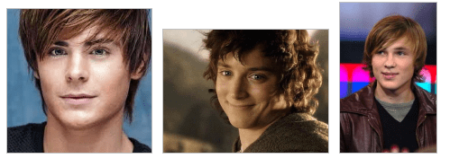
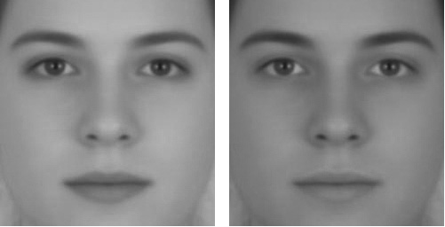
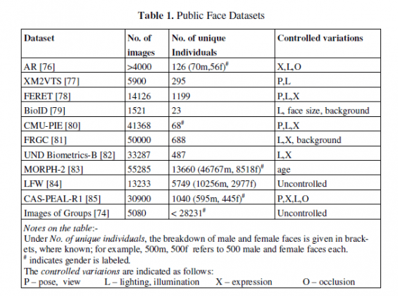
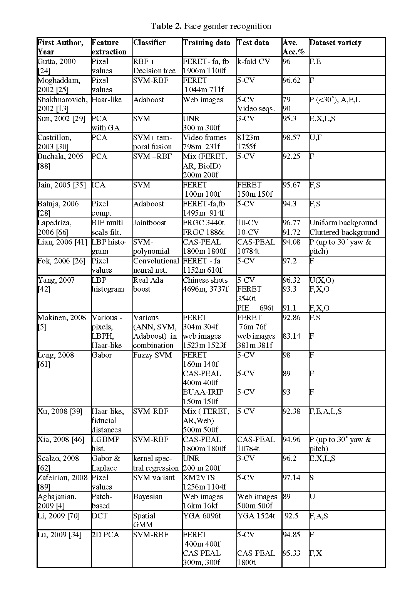
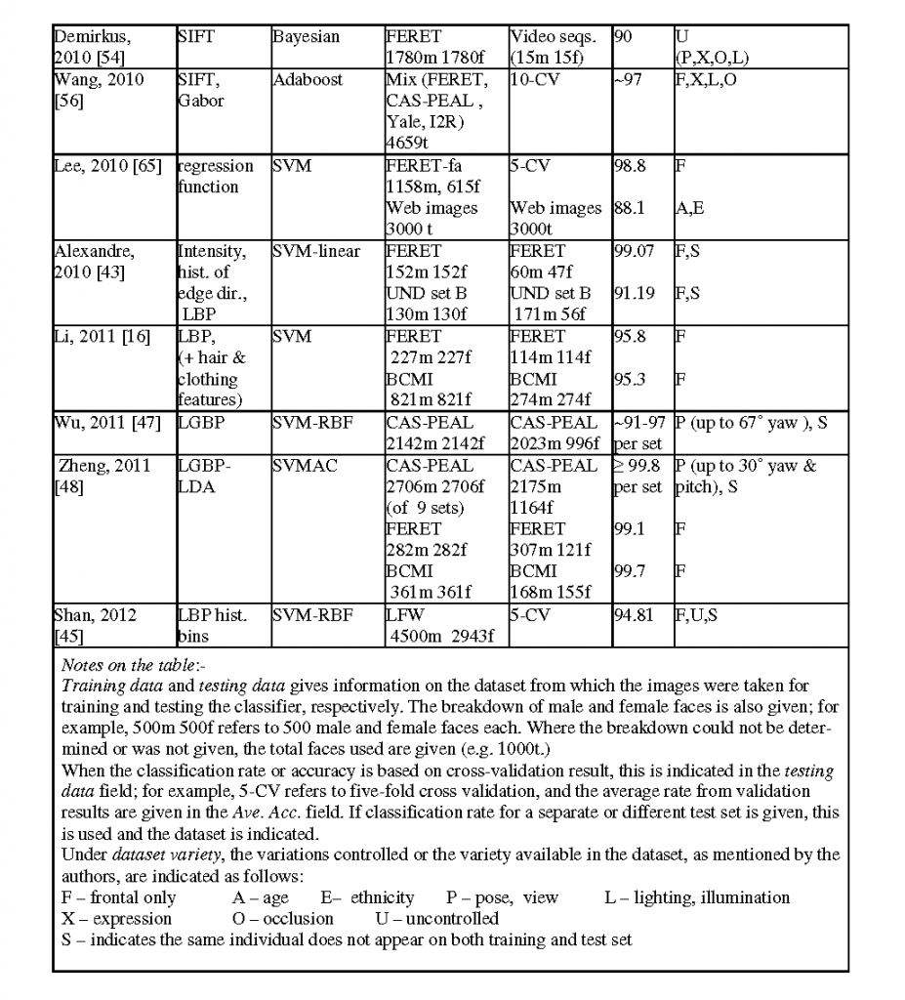

Data publicării: 28.08.2017
Autor articol: Anca Ignat
Pentru oameni a recunoaște genul unei persoane privindu-i fața este un lucru ușor de făcut. Studiile arată că acest lucru, noi oamenii, îl realizăm cu succes în mai mult de 95% din cazuri. Recunoașterea automată, de către calculator, folosind tehnici de prelucrare de imagini și computer vision nu este o problema simplu de rezolvat. Recunoașterea genului persoanelor joacă un rol important în aplicații ce presupun interacțiunea om-calculator, sisteme de supraveghere, studii demografice, biometrie, în căutarea în baze de date bazată pe conținut sau în publicitatea direcționată pe diverse grupuri de clienți. Identificarea automată a genului unei persoane este o metodă care se poate aplica fără a cere cooperarea persoanei analizate cum este cazul studiului amprentelor sau a irisului. Studiile efectuate pentru identificarea genului sunt în marea lor majoritate orientate spre analiza trăsăturilor feței. Există cercetări care rezolvă problema genului studiind întreaga înfățișare corporală fie dintr-o singură imagine fie dintr-un șir de imagini de siluete umane [1]-[6].
Problema de recunoaștere a genului unei persoane dacă este tratată ca o problema de învățare supervizate presupune parcurgerea câtorva etape: detecția obiectelor, preprocesarea, extragerea de trăsături și clasificarea.
Vom trece în revistă în continuare câteva tipuri de aplicații care ar avea nevoie de răspunsul la problema genului persoanelor:
Sisteme de supraveghere: sistemele de supraveghere inteligente ar avea nevoie, spre exemplu, de detecția genului persoanelor pentru a restricționa accesul persoanelor de un anumit gen în anumite locuri (cușete de tren, camere de hotel, …).
Interacțiunea om-calculator: spre exemplu, formula de adresare a calculatorului către om ar putea fi adaptată in funcție de genul persoanei căreia se adresează
Căutarea bazată pe conținut: căutarea imaginii unei persoane într-o bază de date cu multe fotografii ar fi mai rapidă dacă problema identificării și recunoașterii genului ar fi rezolvată
Biometrie: în sistemele biometrice bazate pe recunoașterea feței, informația despre gen înjumătățește spațiul de căutare
Studii demografice și publicitate: studiile demografice ar avea nevoie de informații despre persoanele care au vizitat un anumit loc, genul fiind una din ele. Un panou publicitar inteligent ar pute prezenta reclame orientate pe genuri în funcție de persoana/persoanele care se uită spre acel panou.
Pentru a face identificarea genului unei persoane cel mai des se folosește fața, eventual și regiuni alăturate (păr, gât). Variabilitate foarte mare a fețelor umane (Fig. 1) cât și procesul de obținere a imaginii sunt factori importanți care pot afecta acuratețea identificării automate a genului. Factorii umani care influențează detecția genului sunt vârsta, etnia, expresiile feței (zâmbet, ochi închiși, …), accesoriile purtate (pălărie, ochelari). Printre factorii datorați procesului de fotografiere sunt poziția capului, condițiile de lumină (Fig. 2), calitatea imaginii (estompată, cu zgomot).
Studiile efectuate pe identificarea automată a genului în funcție de vârstă au arătat că au existat probleme mari de clasificare în rândul femeilor în vârstă și a băieților. În general, clasificatorii tind să greșească mai mult la detecția genului pentru persoanele foarte tinere și pentru cele în vârstă. În ceea ce privește etnia, s-a făcut următorul test: a fost antrenat un clasificator pentru toate etniile dar a fost testat pe o etnie specifică, rezultatele fiind mai proaste decât în cazul când în faza de antrenare s-au folosit doar imagini ale etniei testate.
În procesul automat de identificare a genului, după ce este identificată și extrasă fața persoanei, pot fi aplicate câteva tehnici de preprocesare a imaginii. Aceste tehnici au rolul de a îmbunătăți robustețea clasificatorului față de variații date de condițiile de lumină, poziție a persoanei. Printre algoritmii de preprocesare ce pot fi aplicați imaginii faciale sunt:
Normalizarea în raport cu contrastul sau strălucirea (egalizarea histogramei ar putea face o astfel de normalizare)
Eliminarea anumitor regiuni adiacente feței (păr, gât)
Alinierea geometrică (un anumit element al feței să fie în poziție fixă, operație ce poate fi realizată manual sau automat)
Reducerea dimensiunii la una comuna tuturor imaginilor
Pentru eficiența computațională este de preferat să nu se facă alinierea feței, deoarece este un proces care durează mult. S-a constatat că metodele de aliniere automată nu au dus la îmbunătățirea ratei de clasificare a genului, iar cele manuale au dus la o creștere mică a acestei rate. De asemenea, s-a constatat că e bine să se facă alinierea înaintea reducerii dimensiunii imaginii. Dacă alinierea nu este realizată, adăugarea deliberată a unor fețe nealiniate în mulțimea de antrenament a ajutat clasificatorul să fie robust la fețe nealiniate.

Fig.1 – Nu e întotdeauna simplu!

După ce o față umană a fost identificată într-o imagine, apoi a fost segmentată și imaginea feței a fost standardizată aplicându-se tehnici de preprocesare, urmează etapa extragerii de trăsături.
Metodele de extragere de trăsături pot fi împărțite în două tipuri: geometrice și bazate pe înfățișare. Cele geometrice calculează anumite puncte cheie situate pe fața analizată și sunt calculate relații geometrice între aceste puncte. Metodele bazate pe înfățișare se folosesc de anumite transformări ale imaginilor pentru a construi vectorii de trăsături. Vom trece în revistă în continuare câteva tipuri de metode de extragere de trăsături folosite la identificarea genului.
Trăsăturile bazate pe distanțe fiduciale determină puncte cheie de pe fața umana cum ar fi nasul, gura, părul, urechile și ochii, aceste elemente fiind numite și puncte fiduciale. După determinarea acestor puncte, se calculează distanțele între ele, distanțele fiduciale. Studii folosind subiecți umani au stabilit faptul că aceste distanțe sunt foarte importante în determinarea genului.
Valorile intensității pixelilor pot fi folosite direct ca vectori de trăsături, pentru a antrena clasificatori, precum rețele neuronale sau SVM-uri pentru a realiza distincția de gen. În cadrul etapei de preprocesare imaginile sunt normalizate pentru a reduce variațiile legate de poziția feței sau iluminare și se redimensionează. În cazul folosirii SVM, varianta cu nucleu RBF dă cele mai bune rezultate. O metodă rapidă de clasificare se poate obține folosind comparații directe între pixeli si Adaboost. Folosirea directă a intensității pixelilor face ca vectorul de trăsături să fie de dimensiune mare. Pentru reducerea dimensiunii vectorilor de trăsături sau folosit tehnici precum PCA (analiza pe componente principale) sau ICA (analiza componentelor independente).
Alt mod de a construi vectori de trăsături este folosind caracteristicile dreptunghiulare introduse de Viola și Jones în algoritmul lor pentru detecția feței. Reprezentarea integrală a imaginilor poate fi folosită pentru calculul rapid al acestor trăsături dreptunghiulare și apoi cu Adaboost se selectează trăsăturile folosite de o rețea neuronală.
Pattern-urile binare locale (LBP – Local Binary Patterns) o tehnică bine-cunoscută de extragere de trăsături pentru clasificarea texturilor, au fost folosite cu succes și pentru detecția genului. Pattern-urile binare au fost folosite și împreună cu trăsături legate de formă sau cu cele legate de contrast pentru a îmbunătăți rata de clasificare a genului persoanelor.
SIFT (Scale Invariant Feature Transform) este o tehnică de punere în evidență a unor elemente cheie dintr-o imagine, care, după cum sugerează și numele ei, este invariantă la scală, translații, rotații și parțial la schimbări de lumină și proiecții afine. Avantajul folosirii SIFT pentru problema genului este că nu mai este necesară etapa de preprocesare. Descriptorii SIFT au fost folosiți împreună cu descriptori de formă și Adaboost pentru clasificare.
Wavelet-urile Gabor sunt un alt instrument important folosit la extragerea de trăsături. Există multe alte abordări la extragerea de trăsături pentru detecția genului.
Pentru testarea metodelor propuse, se folosesc diverse baze de date disponibile public. În cele mai multe cazuri, aceste baze de date au fost create pentru studiul problemelor de detecție și recunoaștere a fețelor. Nu există o bază de date care să fi fost special realizată pentru recunoașterea genului. FERET este o bază de date foarte folosită la clasificarea genului. Conține 14.126 imagini pentru 1199 persoane. Fețele au orientări diferite și condițiile de iluminare sau expresia variază. CAS-PEAL este o bază de date conținând imagini de fețe de chinezi. Are 99.594 imagini pentru 1040 persoane (445 femei și 595 bărbați) cu variații de orientare, expresie, accesorii și iluminare. Doar o parte a acestei baze de date este valabilă pentru cercetare. O altă bază de date interesantă este LFW (Labeled Faces in the Wild). Conține fețe cu o variabilitate foarte mare, așa cum întâlnim în viața de zi cu zi (diverse orientări, condiții de lumină, accesorii, ocluzii, fundaluri). În cele mai multe baze de date de fețe informația despre gen nu este adnotată, acest lucru este făcut, de obicei, manual de cercetătorii problemei genului. În Tabelul 1 [1] sunt enumerate baze de date folosite pentru a testa metodele propuse pentru detecția genului.

În Tabelul 2 [1] sunt trecute în revistă rezultatele obținute de diverși cercetători la rezolvarea problemei determinării genului.
În încercarea de standardizare a evaluărilor făcute asupra fețelor s-a propus ca MORPH-II și LFW să fie bazele de date folosite pentru clasificare pentru gen.
O altă abordare a genului este cea făcută analizând postura (în mers, alergare, urcând scările, ..) atunci când omul este în mișcare. De obicei se analizează postura în mers a omului. Avantajele folosirii posturii ca element biometric sunt date de faptul că preluarea de imagini a persoanei respectivă este ne-invazivă, pot fi realizate de la distanță. Clasificarea genului folosind postura poate fi foarte utilă atunci când imaginea feței nu e clară sau nu e vizibilă.


Referințe bibliografice
C.B. Ng, Y.H. Tay, B.M. Goi, “Vision-based human gender recognition: A survey”, arXiv preprint arXiv:1204.161, 2012. Available at: http://arxiv.org/ftp/arxiv/papers/1204/1204.1611.pdf.
V. Santarcangelo, G.M. Farinella, S. Battiato, “Gender recognition: Methods, datasets and results”, IEEE Int. Conf. on Multimedia & Expo Workshops (ICMEW), pp.1-6, Turin, Italy, June 29 2015-July 3, 2015.
E. Makinen, R. Raisamo, “Evaluation of Gender Classification Methods with Automatically Detected and Aligned Faces,” IEEE TPAMI, vol.30, no.3, pp.541-547, March 2008.
L.A. Alexandre, “Gender recognition: A multiscale decision fusion approach,” Pattern Recogn. Lett,.vol. 31, no.11, pp. 1422–1427, 2010.
J.E.Tapia, C.A. Perez, “Gender Classification Based on Fusion of Different Spatial Scale Features Selected by Mutual Information From Histogram of LBP, Intensity, and Shape,” IEEE Trans. on Information Forensics and Security, vol.8, no.3, pp.488-499, March 2013.
A. Ignat, M. Coman, „Gender Recognition with Gabor Filters”, 5th IEEE International Conference on E-Health and Bioengineering, EHB 2015, pp. 1-4, Iași, Romania, November 19-21, 2015.